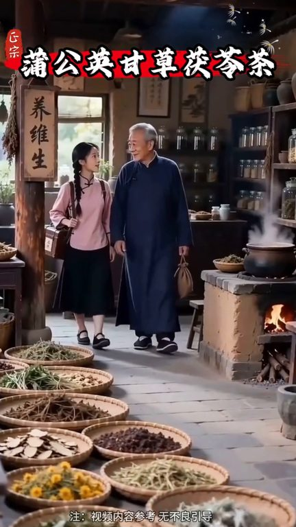
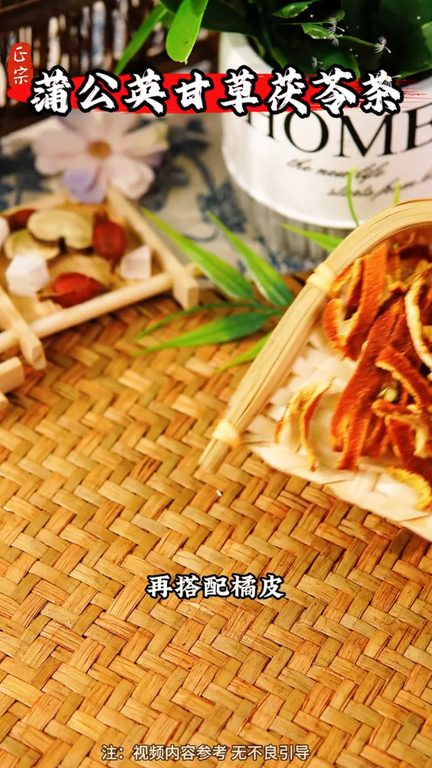
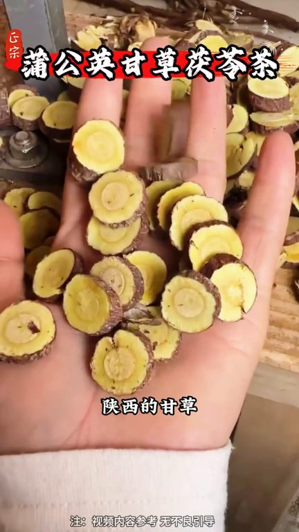
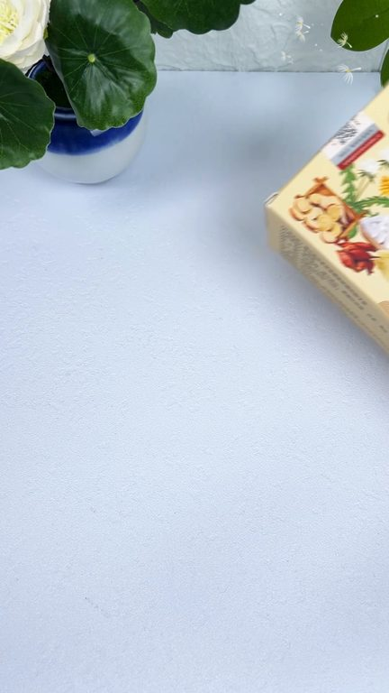

TOP 1 · 代表素材深度拆解
核心放量 点击承压
视频为原始素材 HTTPS 链接；点击后加载，建议在网络环境良好时播放。
38.4万素材消耗
1.59%CTR
45.5%类目消耗占比
-3.37pp较类目均值
表现判断
该素材是类目内第 1 名，属于“核心放量”；CTR 低于类目均值。消耗体现承接规模，CTR 体现首屏与定向效率，两项应结合判断，不能仅以单指标下结论。
表达标签
口播三段式证据
开场钩子师父蒲公英管什么蒲公英让你再大的结界都不怕师父干草管什么干草让结界不会变大
中段论证把它们组合在一起再搭配橘皮玫瑰之子这个就是蒲公英干草蒲灵茶每天来上一杯像是冲了个凉水澡非常舒爽这是我们老师傅搭配好的独立透明包装里面的材料清晰可见精选东北的蒲公英
结尾转化这个就是蒲公英干草蒲灵茶每天来上一杯像是冲了个凉水澡非常舒爽这是我们老师傅搭配好的独立透明包装里面的材料清晰可见精选东北的蒲公英陕西的干草云南的蒲灵广东的橘皮等七种食材每次取一包热水冲泡五分钟就能喝入口清香微甜趁馅或三合划算我建议你多背几盒
有效点
- 消耗占比 45.5% 说明具备投放承接能力，但 CTR 较类目均值低 3.37pp
- 口播包含明确到手机制或直播间指令，转化路径较完整
迭代动作
- 重做前 3–5 秒：结果前置、缩短背景铺垫，并把核心人群直接写进首屏字幕
- 中段每 5–8 秒补一次画面变化或证据点，避免同景口播造成信息疲劳
- 促销口径与资质信息保持同屏可验证，结尾只保留一个明确行动指令
合规关注

钩子建立 · 1.5s

场景/问题展开 · 11.1s

卖点证据 · 25.5s

转化收口 · 35.1s
查看完整口播摘要
师父蒲公英管什么蒲公英让你再大的结界都不怕师父干草管什么干草让结界不会变大那蒲灵呢它让结界变小把它们组合在一起再搭配橘皮玫瑰之子这个就是蒲公英干草蒲灵茶每天来上一杯像是冲了个凉水澡非常舒爽这是我们老师傅搭配好的独立透明包装里面的材料清晰可见精选东北的蒲公英陕西的干草云南的蒲灵广东的橘皮等七种食材每次取一包热水冲泡五分钟就能喝入口清香微甜趁馅或三合划算我建议你多背几盒